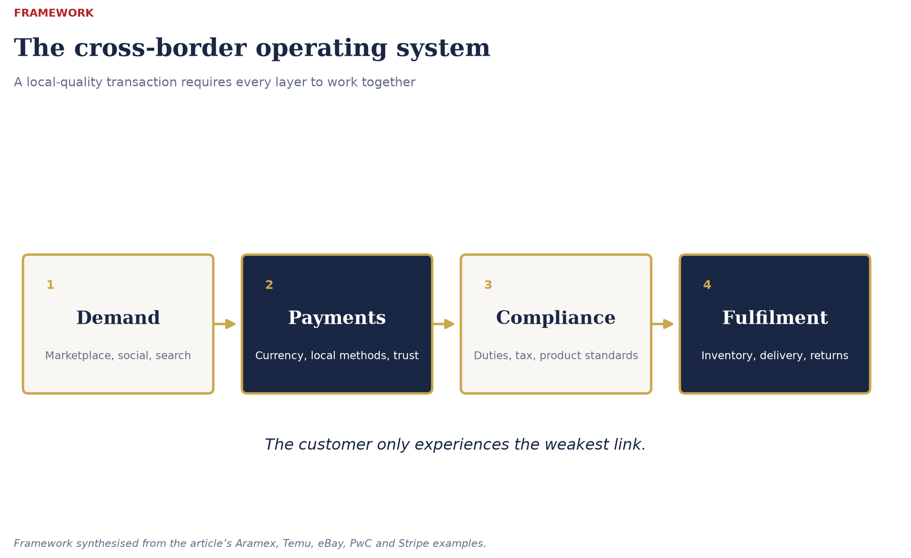
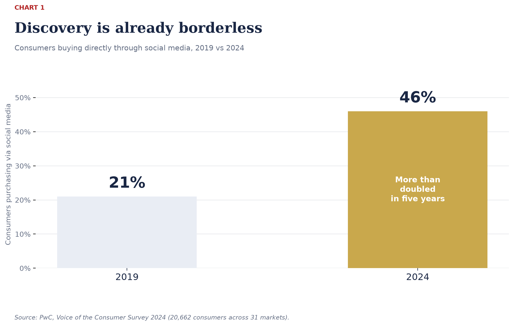
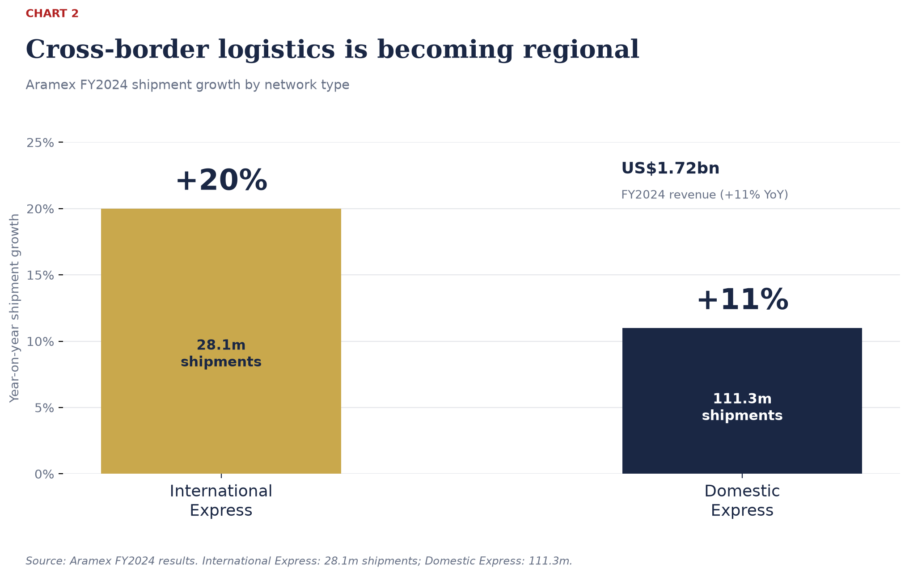
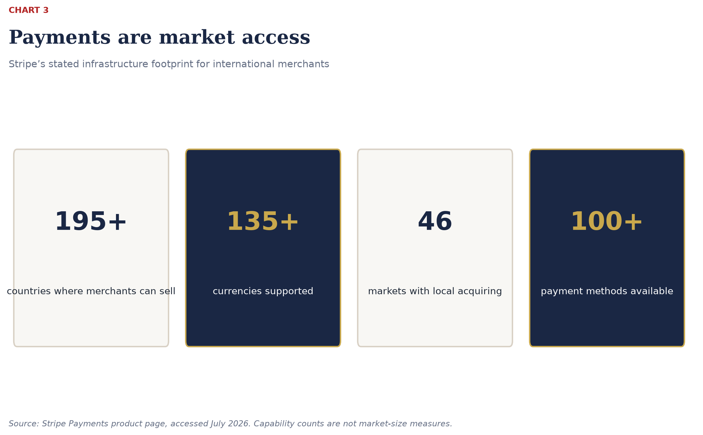

The Border Is No Longer the Barrier. The Operating System Is.
By Ken Ardali · August 2026 · 12 min read Series: The New Rules of Global Trade · Chapter 3 of 8
A few years ago, international expansion followed a familiar sequence. Find a distributor. Negotiate a contract. Ship a container. Build a local sales team. Then wait to discover whether customers actually wanted what you had brought them.
Cross-border ecommerce reversed that logic.
Demand can now appear before a company has a local entity, a local warehouse or a retail partner. A consumer discovers a product through a creator in Manchester, checks the price in euros, pays through a local method, and expects the delivery, returns process and customer service to feel as straightforward as a domestic purchase.
That is not exporting with a better website. It is a different commercial architecture.
The border has not disappeared. In several important markets, it has become more visible: new tariff regimes, tougher product-compliance rules, changing de-minimis treatment and more scrutiny of marketplace sellers have made that clear. But the businesses that win are not those trying to pretend borders do not exist. They are the ones that build an operating system capable of absorbing the complexity behind the customer experience.
That system has six moving parts: demand discovery, localised checkout, duty and customs treatment, inventory placement, last-mile delivery and workable returns. Miss one, and the customer sees the border immediately.
What the Data Says
The demand side of commerce has already become remarkably borderless. PwC’s 2024 Voice of the Consumer survey of 20,662 consumers across 31 markets found that 46% bought products directly via social media, more than double the 21% reported in 2019. 67% used social platforms to discover new brands.source
That matters because the first encounter with a brand is no longer necessarily a shelf, a search result or a local retailer. It can happen anywhere. A good product, compelling story and effective creator relationship can generate demand in a market long before the company has decided it is “ready” to enter it.
But discovery is only the beginning. Conversion is local.
PwC found that consumers still split their purchasing between physical stores (42%), smartphones (34%) and PCs (23%). The lesson is not that one channel has won. It is that customers move between channels, and they expect the payment, price and service proposition to remain coherent.source

Figure 1. A local-quality cross-border transaction requires demand, payments, compliance and fulfilment to work together.

Chart 1. Consumers buying directly through social media more than doubled from 21% in 2019 to 46% in 2024. Source: PwC, Voice of the Consumer Survey 2024.
The critical point is simple: international demand is increasingly easy to create. A local-quality transaction remains hard to deliver.
The Logistics Shift: From Long-Haul Parcel to Regional Operating Model
Aramex is a useful lens on what is happening beneath the customer interface.
In 2024, the company reported revenue of US$1.72 billion (AED 6.324 billion at the AED’s fixed US-dollar peg), up 11% year on year. Its International Express business handled 28.1 million shipments, up 20%, while Domestic Express handled 111.3 million shipments, up 11%.source
The more revealing detail was Aramex’s explanation of the mix. Ecommerce nearshoring is moving some volume away from long-haul international express and towards warehousing, domestic delivery and shorter intra-regional cross-border lanes, particularly across the GCC and wider Middle East, North Africa and Türkiye region. In other words, cross-border commerce is not becoming less international. It is becoming more regional, more inventory-led and more operationally local.
That changes the economics. Aramex reported that shorter intra-regional lanes reduced International Express gross margin from 34% to 32%, while domestic express margin improved from 22% to 24% as nearshored inventory entered local delivery networks.source

Chart 2. Aramex FY2024: International Express handled 28.1m shipments (+20%), while Domestic Express handled 111.3m (+11%). Source: Aramex FY2024 results.
This is the part that many boardroom conversations miss. The choice is not simply “ship from origin” or “open a country office.” There is an increasingly useful middle ground: place inventory in the right regional node, connect it to local fulfilment, and make the transaction feel domestic at the point at which it matters.
For a Turkish consumer-goods manufacturer looking west, that may mean UK or EU stock positioned around a defined category launch rather than a broad, expensive retail rollout. For a UK brand looking east or into the Gulf, it may mean using a regional fulfilment partner that understands product classification, duties, licensing restrictions and returns as part of the service—not as an unpleasant exception at the end of the process.
The carrier is no longer just the carrier. It is part of the market-entry strategy.
Temu: When the Border Returns
The fastest way to understand why this architecture matters is to look at what happens when it breaks.
Temu built early scale through a direct-from-origin model: Chinese manufacturers could reach overseas consumers at extraordinary speed and low apparent cost. But the commercial environment changed. Tariff exposure, de-minimis reform and platform-compliance scrutiny made the original model less sufficient on its own.
In 2024, Temu began onboarding US merchants holding inventory in US warehouses. By November, access to its local-seller model had been expanded to US-based sellers more broadly. Sellers could either fulfil orders themselves from local stock or send bulk inventory to partner fulfilment centres for picking, packing and delivery.source
By February 2025, Temu was visibly directing US shoppers toward products tagged as “local,” using US warehouse inventory. CNBC reported an estimate from Marketplace Pulse that local-inventory merchants represented roughly 20% of Temu’s US sales by July 2024.source
The policy backdrop explains the shift. In July 2025, the White House issued an order suspending duty-free de-minimis treatment globally from 29 August 2025, requiring standard entry documentation and applicable duties, taxes and fees for shipments that had previously qualified.source
At the same time, the European Commission opened formal proceedings against Temu under the Digital Services Act in October 2024. Among the questions were how the platform assessed risks around illegal or non-compliant products, rogue traders and consumer protection.source
The conclusion is not that Temu’s model is finished. It is that a marketplace built on cross-border demand cannot treat local stock, product compliance and delivery architecture as back-office matters. When regulation changes, they become central to the proposition.
This is the pressure test for every cross-border business. If your landed cost becomes unclear, if a product fails local standards, or if delivery moves from three days to three weeks, the customer does not blame trade policy. They blame you.
eBay: Turning a Foreign Sale into a Domestic Hand-Off
eBay offers the more mature version of the same lesson.
Its International Shipping programme allows eligible US sellers to send an item to a domestic eBay hub. From there, eBay handles the international leg: logistics, customs documentation, import and export restrictions, and international returns. Once the item reaches the hub undamaged, the seller’s responsibility is largely complete.source
That may sound like a shipping feature. It is more important than that.
eBay has productised a complicated market-entry layer—customs, international delivery, return handling and seller protection—so that a smaller merchant can reach foreign demand without building a full international operations team. The sale remains international. The seller’s operating model becomes much closer to domestic commerce.
But even eBay cannot remove the commercial choices created by tariffs. Its guidance distinguishes between Delivered Duty Unpaid, where the buyer faces charges on arrival, and Delivered Duty Paid, where the seller bears the duty and clearance cost and must price accordingly. It also makes the essential point that tariff treatment follows the country of manufacture, not the country from which an item ships.source
That distinction matters for every company now considering regional inventory. A warehouse in Rotterdam or Birmingham may transform customer experience, lead time and returns. It does not automatically change origin, customs liability or the underlying economics of the product.
Good cross-border strategy holds both truths at once: position stock where it improves the experience, and build the compliance model around what the goods actually are.
Payments Are Not a Feature. They Are Market Access.
The most neglected part of many international expansion plans is also the one closest to conversion: the payment moment.
A company may have a compelling product, a competitive delivered price and inventory in the right place. Yet it can still lose the customer because the checkout is in an unfamiliar currency, the preferred payment method is absent, or the authorisation process feels unsafe.
Stripe’s current platform describes the infrastructure now available to merchants: selling in more than 195 countries, transacting in more than 135 currencies, local acquiring in 46 markets and access to more than 100 payment methods.source
Those numbers are product capabilities, not a promise of automatic success. But they illustrate a structural change. A mid-sized business no longer needs to negotiate a banking relationship in every market before it can test demand. It can offer local-currency pricing, preferred methods and a more familiar payment experience far earlier in the market-entry journey.

Chart 3. Stripe’s stated international payments footprint. These capability counts are not market-size measures. Source: Stripe Payments.
Stripe’s own examples are revealing. iDEAL in the Netherlands and bank redirects in Malaysia are not “alternative payments” at the margins. For many customers, they are the expected way to pay.source
Localisation, then, is not merely translating a product page. It is making the transaction recognisable.
The friction remains real. Stripe cites World Bank data showing that the global average cost of sending a US$200 remittance was 6.4% in late 2023, alongside persistent barriers around licensing, capital controls, tax treatment and local data rules.source
The point is not to make every company a payments expert. It is to stop treating payments as a technical afterthought. It is a commercial decision with direct consequences for conversion, trust and margin.
What I Saw From the Inside
At eBay and Alibaba, I saw a recurring mistake made by otherwise capable businesses entering new markets: they saw cross-border ecommerce as a channel decision.
“Should we sell on the marketplace?”
“Should we launch a local website?”
“Should we find a distributor?”
Those are valid questions. But they come too late in the sequence.
The better question is: what has to be true for a customer in this market to experience us as a credible local choice?
The answer is never only marketing. It involves the right product assortment, the right price architecture, duty clarity, local service expectations, platform fit, returns and payment behaviour. It requires someone to own the commercial model end to end—not simply hand it from ecommerce to finance to logistics to legal and hope the joins hold.
This is why the best cross-border operators often look faster than their competitors. They are not necessarily more aggressive. They have removed the internal hand-offs that make every international transaction feel like an exception.
Alibaba’s ecosystem understood this deeply. A marketplace seller could reach demand, connect to fulfilment, use payment infrastructure and learn from the data created by each transaction. eBay did the same in a different way: it made international selling more manageable for smaller merchants by absorbing complexity into the platform.
The lesson is as relevant to a UK challenger brand as it is to a Turkish manufacturer or an established European consumer-goods company. The competitive advantage is not access to a distant market. Everybody has increasing access. The advantage is the ability to make that market commercially legible and operationally repeatable.
The Opportunity Hiding in Plain Sight
There is a powerful misconception in international growth: that a company must choose between an expensive full-scale market launch and doing nothing.
Cross-border ecommerce makes that binary obsolete.
The better model is a staged one:
- Find demand — use marketplaces, social commerce, search and selected partners to identify where the product travels.
- Localise the transaction — offer clear pricing, suitable payment methods and transparent duty treatment.
- Position inventory intelligently — move from individual-origin shipment to regional or local stock when the demand and economics justify it.
- Design compliance into the model — product standards, documentation, tax and customs cannot be retrofit once volume arrives.
- Scale only what works — use the data to decide whether the next step is a larger fulfilment commitment, retail partnership, distributor or local entity.
This is particularly relevant to the UK–Türkiye corridor.
Türkiye has manufacturing capability, consumer brands, ecommerce sophistication and geographic proximity to Europe that few other markets can combine. The UK offers a high-value consumer market, mature marketplace adoption and a commercial environment receptive to differentiated consumer goods. Yet too many companies approach the corridor with the old options: either find a distributor or open an office.
The real opportunity is to use cross-border commerce as the diagnostic stage of expansion—not as the cheap substitute for a serious strategy, but as the evidence base for one.
The opportunity is already visible in three different models. Karaca is using TikTok Shop UK to build awareness and sales in a market where it is less established—an example of platform-native demand creation before a full conventional rollout. Aytac Foods already combines a UK online shop, national delivery and a wholesale offer for Turkish, Middle Eastern, Asian and halal food products; the next challenge for businesses in that position is to use digital demand and trade-channel data to extend beyond the customers who already know the category. And Avansas, Turkey’s established B2B ecommerce operator, is a useful reminder that the channel model itself can be a source of advantage: a disciplined digital ordering, assortment and fulfilment engine can be tested with a defined UK or European customer segment before a business commits to a traditional distributor-led rollout.
A Turkish homeware or food brand can therefore test assortment, price points, creators, platforms and fulfilment economics in the UK before committing to a conventional rollout. A UK brand can test European, Gulf or Turkish demand while building a payment, fulfilment and compliance model that can scale instead of collapse under success.
The border has not vanished. It has moved behind the interface. And that is where the commercial battle is now being won.
If you lead a consumer business, marketplace or growth programme, stop asking whether cross-border ecommerce is “a channel.”
It is increasingly the operating system for market entry.
The winning model is not the one that can ship a product furthest or cheapest. It is the one that can combine global demand with a local-quality customer experience: the right payment method, a clear landed price, reliable delivery, compliant product and credible returns.
I have spent more than 25 years working across eBay, Alibaba, SGS, Turkey, China and Europe. The consistent pattern is this: customers will happily buy across borders. They will not happily absorb the complexity of doing so.
The businesses that remove that complexity—commercially, operationally and visibly—will define the next phase of international growth.
If you are considering a new market, rethinking a channel model, or trying to turn cross-border demand into a repeatable commercial engine, reach out directly on LinkedIn.
Next: Chapter 4 — China After the Shock. What has actually changed inside the world’s most competitive ecommerce market—and what Western businesses still misunderstand about it.
Sources
- PwC, Voice of the Consumer Survey 2024 (15 May 2024)
- Aramex, FY2024 Results (11 February 2025)
- Aramex, 2024 Integrated Annual Report
- Shopify, How to sell on Temu
- CNBC, Temu steers users to local products after Trump ends de minimis (5 February 2025)
- European Commission, formal proceedings against Temu under the DSA (31 October 2024)
- White House, suspension of duty-free de-minimis treatment (30 July 2025)
- eBay International Shipping
- eBay, US tariff guidance for sellers
- Stripe Payments
- Stripe, Global payment innovation (2 April 2026)